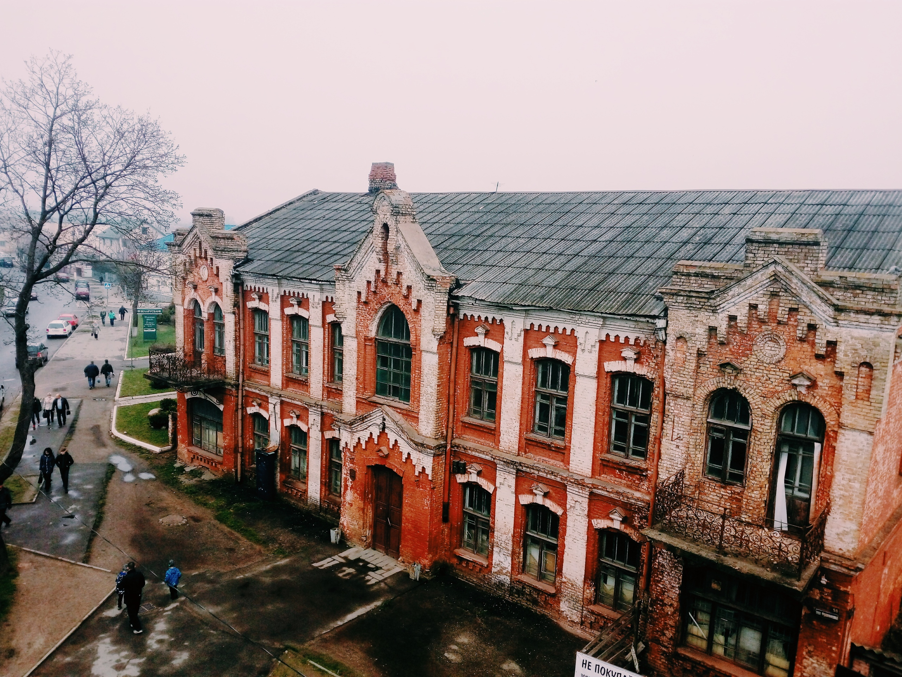

Поехать в Барановичи было странной идеей-фикс. Начиная узнавать у знакомых, как доехать, что увидеть, ловишь ответный вопрос «зачем тебе Барановичи?», но хочется – значит надо. ⠀ ⠀Барановичи для нас - это огромный мост, церковь, солдатики, самолеты (везде), граффити, БарГу, Несквик с апельсиновой цедрой, музей ЖД за рубль 50, Полет, Любовь, Кристина, Ксения, у Васи (это все ларьки), печенье амур, зефир (много), ромовые звезды. ⠀ ⠀Барановичи увидеть стоит, хотя бы ради интереса ( 2,5 часа на электричке из Минска) Нам удалось ухватить не так уж много, поджимали Ивацевичи, а в Баранках, знаете, заблудиться очень просто, не зря одно из граффити изображает огромный лабиринт. Но попропадать когда-нибудь в барановичских дворах,видимо, следующая идея-фикс
Baranovichi
